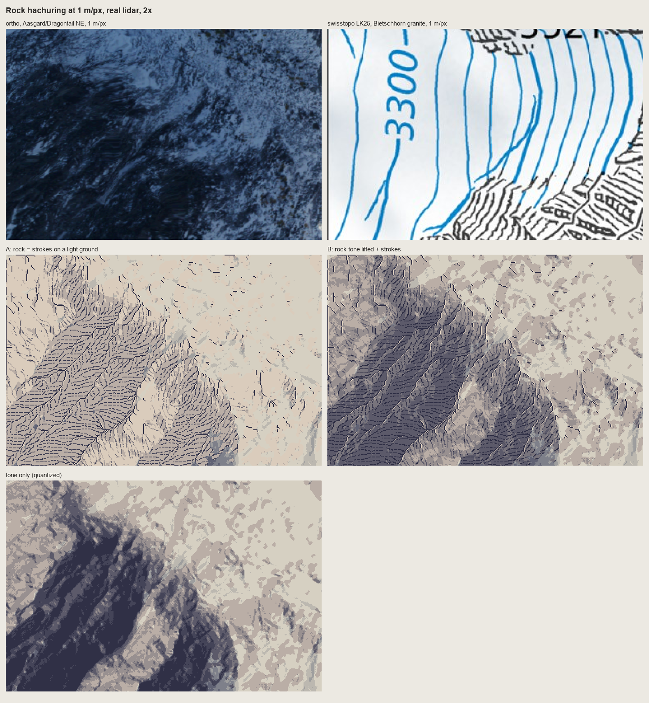
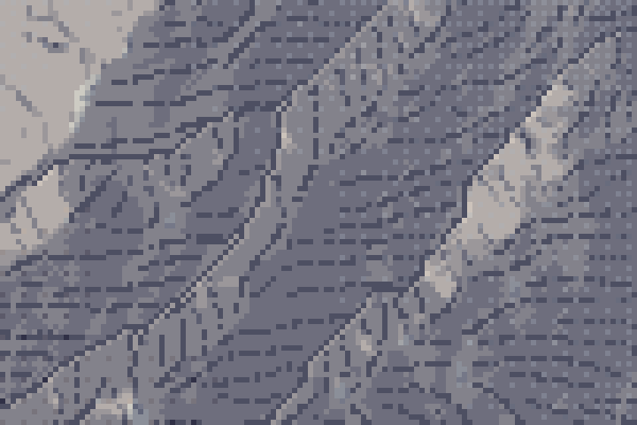

3. Rock hachuring on real lidar
Imhof's "shaded rock hachuring" (Ch.11 D.5, p.259-263), run on 1 m lidar at 1 m/px: code/rockdraw.py, code/hachure.py, code/skeleton.py, and the compression step in code/place.py. It makes a convincing field of strokes gathered into gullies. It is not yet Imhof's rock drawing, and the last section says why.
The rules being implemented
From p.259-263, in the order they became code:
- The hachures together make the tones of a (prepared or imagined) shaded image.
- They follow the slope on steep rock ("steep steps ... are best expressed by rows of short strokes directed downslope").
- Tone comes from stroke weight at a nearly constant density; the lit sides get "an extremely light distribution of fine hachures".
- The skeleton comes first: gully lines, each with "a crisp illuminated side paralleled by a well defined shadow" (178-15).
- "Ridge crests are not drawn in" (178-12). "The impression of a sharp edge is produced not by means of ridge lines, but rather through the sharp change between adjacent light and shadow areas."
- Overall "lightness and transparency. Rocks should not lie heavily in the map like lumps of coal."
1. Evenly spaced fall lines
The strokes are streamlines of the downhill field, placed so that no two come closer than a fraction of the pitch (Jobard and Lefer, 1997). Seed a line, integrate it both ways, stop it against its neighbours, then seed new lines one pitch away on both sides of it:
def integrate(p0, sgn, sid):
pts = []; p = np.array(p0, float)
for _ in range(int(max_len / step)):
v = np.array([_bil(ur, *p), _bil(uc, *p)]) * sgn
q = p + step * v # Heun
v2 = np.array([_bil(ur, *q), _bil(uc, *q)]) * sgn
if v @ v2 < 0: # direction flips: a gully floor or a crest
break
q = p + step * 0.5 * (v + v2)
if not valid(q) or G.near(q, test * sep, exclude=sid):
break # too close to another stroke: end here
pts.append(q.copy()); p = q
return pts
...
# Jobard-Lefer: new seeds at distance sep on both sides of the new line
d = np.gradient(L, axis=0); d /= (np.hypot(d[:, 0], d[:, 1])[:, None] + 1e-9)
nrm = np.stack([-d[:, 1], d[:, 0]], -1)
for k in range(0, len(L), max(1, int(sep / step))):
for sg in (1, -1):
queue.append(tuple(L[k] + sg * sep * nrm[k]))
The two stopping rules do the drawing. A flip in direction stops a line at a gully floor or on a crest, so strokes from the two walls of a gully face each other and never cross it. The distance test ends converging lines against each other, and that is the feathering.

nb132. The streamlines alone on Dragontail's NE face (1 m/px, 6×), black on white. Even pitch, gathered into gullies, and nothing crosses a crest. On this face the fall line runs nearly east-west in plan: measured mean downhill vector (row −0.30, col +0.68). That fact will matter.
2. The skeleton: gully lines with lit strips
Gullies are cells with enough contributing area that are also concave at landform scale, thinned to 1 px, keeping only linked strokes ("elongated, always linked"):
def gullies(z, cell, area_m2=300.0, scale_m=6.0, conc=0.01, min_len_px=8, acc=None):
acc = flow_acc(z) if acc is None else acc # D8 contributing area
k = curvature(z, cell, scale_m) # Laplacian of the smoothed DEM, >0 concave
m = (acc * cell * cell >= area_m2) & (k > conc)
m = skeletonize(m)
m = remove_small_objects(m, min_len_px, connectivity=2)
return m, acc
In rockdraw.draw they're restricted to the rock mask (a critic saw gully lines crossing meadow as hair), and each gets its lit strip: the neighbour on the light side is scraped.
g, _ = K.gullies(z, cell, area_m2=gully_area, scale_m=4.0, conc=0.02, min_len_px=6)
g &= rock
lr, lc = int(np.round(light_rc[0])), int(np.round(light_rc[1]))
strip = np.roll(np.roll(g, -lr, 0), -lc, 1) & ~g # the gully neighbour on the light side
ink[strip] = 5
ink[g] = 4
3. Weight: length on shaded faces, ticks or nothing on lit ones
Each stroke's median tone decides its fate. On a lit face it's cut to a two-pixel tick under its upper end, or dropped (a coin toss, to break the regularity). On a shaded face it's drawn whole, in the darker ink where the face is darkest:
tm = float(np.median(tt))
if tm > lit_cut:
n = tick if rng.random() < 0.55 else 0 # lit face: a tick under the upper edge, or nothing
else:
n = len(px)
for i, p in enumerate(px[:n]):
t = tone[p]
ink[p] = max(ink[p], 2 if t < lit_cut else 1)
if t < heavy_at:
ink[p] = 3 # darkest faces: the dark ink, still 1 px wide
The tick is Imhof's Fig.178-2, "rough strokes thickened at the top (sharp delineation of the step)", reduced to its pixel minimum: the stroke's start is the edge.
row_m adds Lehmann's rows: a 1-px break wherever a stroke crosses a contour at that interval, as on the swisstopo 1:25,000:
zz = np.array([z[p] for p in px]); band = np.floor(zz / row_m)
cut = np.flatnonzero(np.diff(band) != 0) + 1
keep = []
for sg in np.split(np.arange(len(px)), cut):
keep += list(sg[1:] if len(sg) > 2 else sg) # drop the first pixel of each row: the gap
px = [px[i] for i in keep] if keep else px
4. The bug that fixed the weight rule: "=" bars
My first version gave dark strokes a second pixel on the side away from the light, which is the pixel form of Lehmann's "thickness". At 2× the NE face looked woven. At 6×:

nb131. Stacked pairs of dashes like equals signs: Imhof's Fig.178-7, "cloth weaving, but not of rock", reproduced by accident.
The cause was geometry, not code. The light is from the WNW, so "away from the light" is down and to the right. On a face whose fall line runs east-west, the second pixel lands directly under a near-horizontal stroke, and each heavy stroke became two stacked rows. Moving the second pixel to the stroke's normal didn't help at pitch 3, because it fills half the gap. Removing heavy pixels entirely made the shaded face limp:


nb134, nb135. No weight at all; then the rule I kept: pitch 4, every stroke 1 px wide, the darkest faces in a darker ink.
In pixels, hachure weight is carried by length and by ink, not by width. Lehmann's nine thicknesses at a constant pitch don't exist at 1 px. What exists is: a tick, a stroke, and a dark stroke.
5. What goes under the strokes
The copies said rock is strokes on a light ground. On the Enchantments at 1 m/px that looked most like the swisstopo Bietschhorn:

fig. Dragontail's NE face at 1 m/px, 2×: ortho; swisstopo 1:25,000 Bietschhorn granite at the same scale; A, strokes on a light ground; B, strokes over the full tone; tone alone. A looks like Swiss rock drawing, B looks like shading with texture, and tone alone is camouflage.
Then Mount Index, a mountain that is nearly all rock, broke it:

nb143. Mount Index with rock as strokes on a light ground. The great dark NE flank, the largest form in the window, is gone: corduroy on paper. Imhof's rock-hachure rule beat his large-form rule.
Strokes over the full tone brought the flank back as mud: dark strokes on dark ground (nb144, nb145 in the POST). The answer is on p.340, "shaded skeletal outlines or rock hachures with corresponding shading tones", and in pixels it means a compressed tone under the strokes (place.paint_plan):
# rock ground: the relief tone compressed to about steps 2.5-5 of 0-6, so the large form survives and a
# stroke 2-3 steps below it still reads on the shaded side
s2[keep] = np.clip(np.round(4.2 + (st[keep] - 3.4) * 0.55), 0, 6).astype(st.dtype)
s2[keep & (ink == 1)] -= 1 # tick
s2[keep & (ink == 2)] = np.maximum(s2[keep & (ink == 2)] - 2, 0) # stroke
s2[keep & (ink == 3)] = np.maximum(s2[keep & (ink == 3)] - 3, 0) # dark stroke
s2[keep & (ink == 4)] = 0 # gully floor
s2[keep & (ink == 5)] = np.minimum(s2[keep & (ink == 5)] + 1, 6) # scraped lit strip
The compression factor 0.55 is the key number. At 1.0 the strokes drown on the shaded side, and at 0 the large form disappears.


nb146, and a 6× crop of the final array. The NE flank stays one dark mass, and the strokes and gullies read inside it.
6. Rock too small for strokes
Imhof's small-scale rule (p.272): as the scale drops, "the space for hachures gradually disappears", lit slopes "are no longer able to bear the burden", and only the smallest shadows remain as marks. In pixels: a rock patch that can't hold about three strokes across is a tone, not strokes. paint_plan keeps only rock components that survive a 2-pixel binary opening:
lab, n = ndi.label(rock)
big = ndi.binary_opening(rock, iterations=2)
keep = np.isin(lab, np.unique(lab[big]))
7. Bedded rock: a variant that doesn't work yet
For the Yakima basalt (Fig.165 and 178-9: slope hachures on the steep walls, horizontals on the ledges), draw_bedded runs draw with rows at the bed interval, then turns each bed contour into a ledge: a dark overhang line with a lit lip on its upslope side.
for lev, poly in S.contour_lines(zs, bed_m, offset=rng.uniform(0, bed_m)):
for r, c in S.resample(poly, 0.6):
ri, ci = int(round(r)), int(round(c))
if rock[ri, ci] and rng.random() < 0.93:
ink[ri, ci] = 3 # the ledge shadow
gy, gx = np.gradient(zs[ri - 1:ri + 2, ci - 1:ci + 2])
q = (ri + int(np.sign(gy.mean())), ci + int(np.sign(gx.mean())))
if rock[q] and ink[q] != 3:
ink[q] = 5 # the lit lip, upslope

nb142. The Red's rimrock at 1 m/px, 2×. It reads as dark stepped rock up close. At 2 m/px and in iso, the critic's verdict: "ladder stitches", and the lane's plain dark bands say "rimrock canyon" better. This is the same failure as my Fig.165 copy: joints drawn, beds lost.
Why it isn't Imhof's rock drawing yet
The second critic's summary was "a slope-keyed hatch texture laid over a hillshade". It's fair, and it names three things:
- Even economy. One pitch, one stroke length rule, everywhere. Imhof's strokes are long in the gullies, short on the ribs, absent on lit slabs, and their density changes with the form. The streamline engine takes
sepas a scalar, and it should be a field. - No crest break. Crests aren't outlined, correctly, but the tone either side of them changes over several pixels, so the edge Imhof makes "through the sharp change between adjacent light and shadow areas" never forms. The fix belongs in the tone (page 1, last section).
- Structure by slope, not by rock. Every rock gets fall-line strokes. Imhof's Figs 160-169 draw each rock by its own structure: granite as flutes following the joints, horizontal beds as bands. The rock mask itself comes from slope alone.